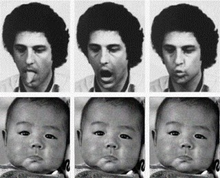

Taklit: Bebek mi seni, sen mi bebegi
Turkiye’ye dondugumde en keyifli zamanlar akraba konu komsu ziyaretleri.
-Ne okuyordun evladim sen?
-Felsefe teyzecim
-Aa, cok guzel cok guzel
Muhabette genelde ya orda biter ya hemen baska bir konuya atlanir. Felsefe bu sakaya gelmez, agir konu. Simdi ozlerle tozlerle kafamizi sisirme. Sokratik damarimin tuttugu zamanlar ya aslinda o kadar da agir ucuk kacik bir konu degil felsefe diyip biraz daha ne yapip ne ettigime dair aciklama ihtiyaci hissediyorum yine de. Gecen gun bitirme tezimi savundum, yine boyle bir ne yaptigimi ne ettigimi insanlara anlatma heyecani icinde calistigim konu uzerine bir seyler karalayayim dedim.
Efenim beni bilenler bilir, yillar once bir insaat muhendisligi ogrencisi iken insaattan baymamla paralel olarak insan beynine merak saldim.Hepimizin kafasinda duran bu beyin nasil calisiyor acaba? Tasi taragi topladik felsefe okumaya basladik, beyni anlayacagiz ya. Tabi o is o kadar kolay degil. Lisans donemi yillari icerisinde temel felsefi alt yapiyi edindik ama, beyni anlamaktan cok beyni anlamakdan ne kadar uzak oldugumuzu anladim. Elde var sifir olunca, masterda bari biraz daha spesifik bir yerinden tuttugumuzu kopartmaya calisalim dedik, taklit etme yetenegi uzerine calismaya basladik. Olum isin gucun yok da taklitle maklitle mi ugrasiyorsun, yok mu calisacak daha ciddi bi konu demeyin simdi. Taklit etme sandiginizdan ve sandigimizdan cok daha onemli bir konu. Cocuklar daha 6-7 aylik iken uzman birer taklitci olmaya basliyorlar, ebebeyinlerinin hareketlerini taklit ederek beyinlerini programlayip hayati ogreniyorlar. Evrimin yasamda kalma problemine attigi gollerin en guzellerinden biri: Etraftan edinilebilecek bilgi varsa ben bunlari beyne tek tek kodlamaya kasmam, onun yerine bunlari etraftan toparlayabilcek zeki ve cevik bir beyin yaparim. Beyni anlamaya ve yapay zeka uzerine calisan bir insan icin onemi, beyin cogu seyi cevresinden taklit yetenegi ile ogreniyor. O zaman taklit yeteginin nasil bir sey oldugunu cozersek belki o tadda programlar gelistirip biz de bir yere variriz.
Demesi kolay tabi de taklit harbi karisik bir yetenek. Simdi karsindakinin hareketlerini anliycan, kendi vucudunun anlayacagi bir formata ceviricen, sonrada kendin aynisini yapican. Olme essegim olme. Hadi elle kolla yaptigin taklitler bir sey degil, en azindan goruyorsun onlari da, yuzunle yaptigin mesela bir dil cikarma taklidin de nerden biliyorsun ne yaptigini, nasil ogreniyorsun? Karsidakinin yuzu ile senin yuzun bir degil ki. Genelde felsefeciler kafalari karisinca kafalarini kasiyarak cocuk gelisimine bakarlar. Yillarin eskitemedigi rasyonalist-empirisist tartismasi: Bu yetenek dogustan mi geliyor yoksa sonradan mi kazaniliyor? En azindan onu anlarsam ondan sonra gerisi kolay, ya da sen oyle san.
Psikolog Andrew Meltzoff 1977 yilinda yeni dogmus cocuklarin yukarida resmini koydugum dil cikarma, agiz acma, dudak hareketleri gibi bazi yuz taklitlerini gerceklestirebildigini deneylerle gosterdiginde bir gurup alkis tutarken, bir gurup insan da hadi canim olmaz oyle sey dedi. Gecen yillar icerisinde insanlar sonuclari deneysel metodolojiyi cok da kurcalamadan cocuk gelisimindeki en ilginc kesiflerden biri olarak psikoloji tarihine yazdilar. Felsefeciler sonuclari kullanip insan zihni, bilinc, diger insanlari anlama vs. bilimum konularda teoriler gelistirdiler.
Ben gecen sene gunesli bir yaz gunu aldigim bir felsefe dersinde karsilastim bu ilginc deneysel sonuclarla. Vay anasini dedim yoluma devam ettim tabi, kapi gibi taklit fotolari karsinda. Lakin ayni felsefeci ayni psikologun baska bir calismasini da yine dogustan gelen yeteneklere veri olarak gosterince pes yani dedim, istersen her sey dogustan gelsin diyip ofkeylen arastirmaya koyuldum, bu alanda baska calismalar var mi diye. Sansima bir suru karsi yonde calisma cikti ve konu uzerinde daha detayli arastirmaya basladim.
Ilk sasirtici sonuc, ayni metodolojiyle baska labratuarlarda yapilan calismalarda yeni dogan cocuklarin taklit yeteneklerinde buyuk farliliklar bulmuslar, kimisi daha iyi yapiyor, kimisi hic yapmiyor. Simdi dogustan gelen yetenekse, niye bir suru saglikli cocuk bunu hic yapmiyor diye sorarlar adama:

Sonra baska bir psikolog demis su cocuklarin taklit yetenegini arastiran 27 makaleye toplu olarak bir de ben bakayim. Datalari tekrar incelediginde sonuc vahim, dil cikarma konusunda tutarli sonuc var, ama diger yuz ifadelerini destekleyen bir data yok. Tamamen bir birine zit sonuclar. Adam 27 deneyin sonucunda cocuklar sadece dil cikariyor diyebiliriz ama oyle gelismis bir taklit yeteneginden soz edemeyiz diyor.

Hobala diyen psikologlar bu sefer acaba bebekler harbiden dil cikarani mi taklit ediyorlar yoksa her hangi bir seye de dil cikarirlar mi acaba demisler ve kalem, top, karton kutu, silindir gibi alet edavatla deney yapmaya baslamislar. Bebekler kalem veya topu yuzlerine yaklastirip uzaklastirdiginda dil cikarmislar, ama kahverengi silindire tepkisiz kalmislar. Karton kutuyu acip kapattiginde yine dil cikartmislar:
Kafalar corba olmus tabi iyice. Oradan uyanik bir psikolog biz taklit falan saniyoruz ama acaba bunlar ilginc bulduklari seylere mi dil cikariyorlar diye bir dusunce atmis. Dur bakayim ben sunlara bir rastgele yanip sonen rengarenk isik gostereyim demis ve hobala bebekler yine dil cikarmis. Peki, illa gorsel bir sey olmasina da belki gerek yoktur. Du ben sunlara bir Rossini’nin Sevil Berberi uverturunu calayim guzelinden demis, ki bilenler bilir cok gaz bir eserdir kendileri, ve bebekler yine dil cikarmis:
Bu ara baska bir psikologda bu yeni dogan bebeklerin taklit yetenekleri acaba yavas yavas geliserek 6 ile 9 ay yaslarindaki gercek taklit yetenegine mi baglaniyor diye ayni bebekler uzerinde uzun vadeli bir calisma yapmis. Farkli zaman dilimlerinde bebekleri test etmis. Sonuc ayri bir gizem: Bebeklerin dil cikarma davranislari 2 ile 3 ayliktan sonra kayboluyor:

Simdi yeni dogmus cocuklarin yaptiginin taklit olmayabilecegine dair bu kadar bilimsel calisma ortaya cikinca bendeniz bir gaza geldim. Gordun mu iste taklit degilmis taklit degilmis diye bas bas bagirip sokaklarda kafamda huniyle gezdiysem de kimse beni ciddiye almadi tabi. Ben de o zaman bak olaya birde evrimsel acidan bakalim guzel kardesim dedim.
Simdi, gunumuzde dogustan gelen bir yetenegin varligini iddaa eden insanlar genelde bilimsel camiada kabul gorebilmek icin buna bir evrimsel arka plan vermek durumundalar. Sonucta, taklit etmek gibi komplike bir yetek oraya gaipten gelmedi, soyle bakalim hangi baskilar bu yetenegin dogal seciliminin onunu acti. Oo istedigin o olsun dedi tabi bebek taklitcileri. Bunun secilmesinin arkasinda duygusal iletisim var dediler. Simdi bebek anneyi taklit edince, anneyi aliyor bir mutluluk bir heyecan, ahh bebegim beni taklit etti diye. Iste, bebek ne kadar erken boyle bir duygusal bag olusturabilirse, o kadar secilim sansi artiyor, sonucta dogada ac bitap ve korunmasiz garibim, annesinin ilgisine ve sevgisine ihtiyaci var.
Ben inatci adamim, bu hikaye ne kadar guzel olsa da o kadar kolay inanmam. Bir kere abi bir anne ne kadar siklikla cocuguna dil cikarir allahini seversen, cocuk mu kandiriyorsun? Tamam anneler her turlu abuk egu bugu davranisi gosterirler ama harbiden 3-4 dakika boyunca dil cikarani ben pek gormedim. Eee anne dil cikarmazsa bebek garibim neyi taklit etsin.
Ama onu gec, bebek o kadar kolay taklit etmiyor ki, hatta ‘taklit’ eden bebek henuz gorulmus degil. Meltzoff deneylerin videosundan en sukela kareleri secip karsi karsiya koymus, bizde fotolara bakip oyle bire bir bir taklit var saniyoruz. Gercekte deneyde bile gormuyorsun taklit maklit. 20 saniye arayla 4 dakika boyunca dil cikariyor deneyi yapanlar. Sonra onun video kayitlarini skorluyorlar, aha iki dil cikarma bes agiz acma diye. Sonra butun denemelerin sonuclarini aliyorlar, istatistiksel bir analizden geciriyorlar ve goreceli bir sonuc elde ediyorlar. Dil cikarma gosterirsen, agiz acma hareketine gore istatistiksel olarak daha cok dil cikarma goruyorsun. Agiz acma gosterirsen, dil cikarma hareketine gore daha fazla agiz acma goruyorsun. Aslinda mutlak sayilara baksan, agiz acma sayisi degismiyor, degisen dil cikarma sayisi.
Iyi de evrimle bunun ne alakasi var demeyin simdi, eger sen bireylerde taklit etmeyi goremiyorsan, bu bireylerin secilimine evrimsel olarak ne fayda sagliycak? Demedik mi anne taklit edildigini gorucek ki sevinicek duygusal olarak baglanicak falan. Anne taklit edildigini goremiyorsa, nasil olucak o duygusal bag isi? Her anneye bi matlab kampanyasi mi yapicaz. Bana ne goreceli istatistiksel analizlerden detayli deneysel yontemlerden, bana bunlarla gelme dedim. Bana bebelerde goster, gozumle gormeden inanmam dedim.
Bir de, ya baba evrimin bir gelir gider ekonomisi var, oyle her sey dogustan olmaz cok acil ihtiyac olmadikca ogrenilebilir olmadikca. Taklit dedigin norolojik olarak pahali bir yetenek, bunu dogustan yapmak deneyimden tecrubeden hic faydalanmadan direk beyne kodlamak kolay is degil. Sen duygusal bag falan diyon da zaten bebeklerin yeterince anneyle bag olusturma yontemleri var. Noral ve hormonal olarak anneler dogumdan sonra baglaniyorlar zaten.
Ee madem bu taklit degil, ne o zaman? Bu kadar deney sonuclari rastgele degil her halde. Tabi yikici degil yapici olmak lazim dedim ve giristik bu sonuclari aciklama isine. Bebekler gaza gelince niye dil cikariyor? O da tezin son bolumunu olusturdu ya, dogumdan sonra dilin ve agzin fizyolojik gelisimine uzanan ayri ve uzun bir muhabbet. Ilgilenen olursa veya yine gaza gelirsem baska bir yazida anlatirim ama soz vermiyorum.
NazIm


{kind=link}
{kind=link}
{kind=link}
{kind=link}
Müthişmiş, dilim dışarda okudum :p Daha yazarsan daha da okurum 🙂
Bu arada bir şey söyemek istedim:
“Sonucta, taklit etmek gibi komplike bir yetek oraya gaipten gelmedi, soyle bakalim hangi baskilar bu yetenegin dogal seciliminin onunu acti.“
Uzman değilim, fakat bildiğim kadarı ile var olan her niteliğin “çevresel baskı/adaptasyon sebebi ile” ya da “bireyin fit olma durumuna katkıda bulunması ve bu yüzden doğal seçilim döngüsü ile” bu günlere gelmeyi başarması tek yolmuş gibi görünse de evrim teorisi ile ilgilenenlerin pek sıcak bakmadıkları bir şey.
Ama sen zaten bakmışsındır diye yanılıyor olma payı bırakıyorum kendime (ya da belki kısa tutmaya çalıştığın bir yazıda ayrıntıya girmek istemedin filan).
Tebrik eder nice başarılar dilerim.
Sevgi,
Selam.
Eyvallah. Yok evrim konusunda haklisin, tezde o kisimlarda daha dikkatli kelimeler kullaniyorum oyle bir yanlis intiba birakmamak icin. Burada yazinin akisini bozmamak adina o sekilde basitce ifade ettim. Ana nokta, taklit etmek gibi komplex bir yetenek, baska bir cok neural altyapi ile iliskili bir yetenek neden dogustan var olsun sonradan ogrenmek gibi bir opsiyon varken. Bunun bir bireye getirisi ne olabilir? Bu bahsettigimiz ilk uc aylik donemde bebeklerde bir suru sonradan kaybolan reflex davranislar var misal, az cok hepsinin bebegin yasamda kalmasi icin ne gibi faydalar sagladigini aciklayabiliyorsun. Ki bunlar adi uzerinde basit reflex davranislar. Taklit gibi cok daha komplex bir yetege bebege hic bir faydasi olmak zorunda degil demek bebek taklitcilerinin isine gelmez, demiyorlarda zaten.
arika bir cumartesi yazisi (sen dun yazmisin ama olsun, ben bugun okudum). haftasonu sayisi mi yapsak editor?
cocuklarin taklit yeteneginden cok rasyonellesmemis algi yapilarinda “sey”lerin biraktigi etkiler ve onlara verilen tepkiler beni cok keyiflensiriyor. rasyonellesmis yetiskinleri dumurlara ugratan, tutarsiz gibi gorunen tepkiler. hani mesela ben bebekken annemler dansoz olucam saniyormus. boyle bir tutarsizliktan bahsediyorum. hani kimse de karsima gecip dakikalarca gobek atmamistir herhalde ki ben de 3 aylikken taklit edeyim. yani o kadar deli bir aileden geldigimi dusunmuyorum.
eline saglik!!!
operim.